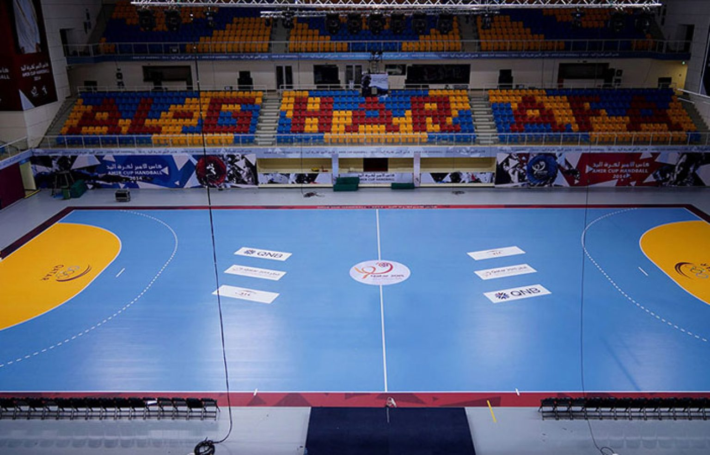
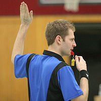
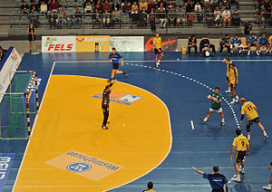

Гандбол

Площадка для гандбола
Гандбол — командная игра с мячом 7 на 7 игроков (по 6 полевых и вратарь в каждой команде). Играют преимущественно руками (правила также допускают использование при игре головы, корпуса или бёдер). Цель игры — как можно больше раз забросить мяч в ворота (3×2 м) соперника. Играют два тайма по 30 минут, а перерыв между таймами — 10 минут.
В современный гандбол играют в закрытом помещении на прямоугольной площадке размером 40×20 м. Ворота окружены 6-метровой (20-футовой) зоной, где разрешено находиться только защитнику-вратарю. Голы нужно забивать, бросая мяч из-за пределов зоны или «пролезая» в нее. В этот спорт обычно играют в помещении, но существуют варианты игры на открытом воздухе в виде полевого гандбола и чешского гандбола (которые были раньше более распространены) и пляжного гандбола.
История игры:
Упоминания о старинных играх с мячом и руками имеются в «Одиссее» Гомера и в трудах древнеримского врача Галена. В средние века аналогичным играм посвятил свои стихи Вальтер фон дер Фогельвейде. Гандбол в его нынешнем виде придумали датские футболисты на рубеже XIX−XX веков в качестве замены футбола для игры в зимнее время. Отличие гандбола от футбола заключалось в том, что в него играли руками, а каждая команда состояла из 6 игроков и вратаря.
Датой зарождения спортивной игры с мячом, зарегистрированной в международной спортивной классификации под названием «гандбол» (ручной мяч), принято считать 1898 год, когда преподаватель физического воспитания реального училища датского города Ордруп Хольгер Нильсен ввёл в уроки физической культуры женских групп игру с мячом, названную «гандбол» в которой на небольшом поле соревновались команды из 7 человек, передавая мяч друг другу и стремясь забросить его в ворота.
Исследования, проведённые в последние годы, дают основания отнести дату зарождения гандбола к более раннему периоду. В 1890 году в Чехии получил распространение народный вариант игры с мячом, названный «хазена» (бросать, кидать). Игра сводилась к нерегламентированному перебрасыванию и ловле мяча в смешанных группах без единоборства. В 1917 году берлинец из двух игр составил новую игру для женщин под названием «ручной мяч».
1918 году на международной спортивной карте чётко обозначились два противоборствующих течения игры: чешская хазена (на востоке) и немецкий гандбол (на севере и западе). Уже в 1920 году в Берлине состоялись первые игры на Кубок и первенство Германии по ручному мячу. А в 1923 году ввели новые правила соревнований. Уменьшение размеров мяча, введение правила «трёх секунд» и «трёх шагов» значительно содействовало повышению техники игры. В 1925 году состоялась первая международная встреча команды Германии с командой Австрии. Германия проиграла со счётом 5:6.
Признание гандбола в 1926 году международным видом спорта дало толчок к развитию игры в ряде стран. Появились клубы, культивирующие гандбол в Люксембурге и Швейцарии, Испании и других странах. Первые международные игры были проведены по этим правилам для мужчин в 1925 году и для женщин в 1930 году. В 1928 году в Амстердаме была создана Международная любительская федерация гандбола (ИАГФ), действовавшая до 1944 года. В неё входило 11 стран, активно развивавших гандбол. В 1936 году гандбол был впервые включён в олимпийскую программу. Дебютировал он на XI Олимпиаде в Берлине, где победителем стала команда Германии. Во время проведения тех игр состоялся IV конгресс ИАГФ, принявший решение о проведении чемпионатов мира по гандболу в форматах 7×7 и 11×11 (по количеству игроков). Чемпионаты сначала должны были состояться с участием одних лишь мужских команд. В 1938 году в Германии первенство мира выиграли немецкие спортсмены. Впервые мужской гандбол был сыгран на летних Олимпийских играх 1936 года в Берлине на открытом воздухе и следующий раз на летних Олимпийских играх 1972 года в Мюнхене в закрытых помещениях, и с тех пор стал олимпийским видом спорта.
Новый подъём в развитии гандбола начался с создания в 1946 году новой международной федерации гандбола — ИГФ (IHF). По состоянию на 2016 год в неё входят 197 федераций. Федерация утвердила программу действий, направленную на возрождение мирового гандбола, наметила проведение чемпионатов мира по гандболу в формате 11×11 с участием мужских и женских команд. В 1949 году в Будапеште на женском чемпионате мира сильнейшей стала команда Венгрии.
В дальнейшем первенства мира проводились раз в четыре года. Всего было проведено 7 мужских и 3 женских чемпионатов по гандболу в формате 11×11. В 1966 году состоялся седьмой и последний чемпионат мира по гандболу 11×11, прекративший своё существование в ранге международной игры, дав, тем самым, возможность развиваться гандболу 7×7. В 1954 году в Швеции состоялся чемпионат мира по гандболу в этом формате среди мужских команд. Победу одержали шведы, а женщины провели первый чемпионат по гандболу 7×7 в 1957 году в Югославии. Первое место завоевала команда Чехословакии.
Гандбол был включен в олимпийскую программу лишь в 1972 г. на ХХ Олимпийские игры в Мюнхене. Соревнования проводились в закрытом помещении, участвовали мужские команды. Победили гандболисты Югославии. Женский гандбол впервые был включен в программу ХХI Олимпийских игр в 1976 г. в Монреале. Выступление женской команды СССР в Монреале, увенчавшиеся завоеванием золотых медалей на Олимпиаде в Москве, укрепило позиции советской школы игры на международной арене.
Этот вид спорта стал наиболее популярен в странах Европы — Германии, Швеции, Франции, Испании, Дании, Норвегии, Венгрии, Хорватии, России. Среди стран за пределами Европы гандбол наиболее развит в Бразилии, Аргентине, Республике Корея, Катаре.
Команда:
Команда состоит из 16 человек, из которых одновременно на площадке могут находиться не более 7, остальные являются запасными. Один из находящихся на площадке игроков является вратарём. В начале игры в каждой из команд должно быть не менее 5 игроков. Запасной игрок может в любой момент выйти на площадку после того, как её покинет находившийся на ней игрок той же команды, который, в свою очередь, становится запасным. При этом выходить на площадку и покидать её игроки могут только через линию замены своей команды. Число замен не ограничивается.
Существуют следующие позиции игроков в гандболе.
1. Вратарь.
2. Угловые или крайние. Играют на флангах, как правило, ловкие, техничные и быстрые игроки. Чаще всего левый крайний бросает правой рукой для увеличения угла атаки, а правый крайний — левой.
3. Центральный или разыгрывающий. Играет по центру поля, часто выполняет функции разыгрывающего игрока. Для него важно умение отдавать передачи и видение поля.
4. Полусредние. Играют между угловыми и центром. Как правило, это рослые игроки с сильным броском.
5. Линейный. Играет на 6-метровой линии. Его задача — мешать обороне противника, бороться за отбитые вратарём противника мячи. Как правило линейный — крепкий и коренастый.
Кроме игроков, в команду могут входить до 4 официальных лиц, вносимых в протокол матча. Одно из этих официальных лиц является официальным представителем команды, имеющим право обращаться к секретарю, секундометристу и, возможно, к судьям. Официальный представитель команды также отвечает за то, чтобы на скамейке запасных и на площадке присутствовали только лица, имеющие на это право.
Продолжительность игры:
Матчи взрослых команд (от 16 лет) состоят из двух таймов по 30 минут с 15-минутным перерывом (матчи детских команд 8—12 лет состоят из двух таймов по 20 минут, а команд 12—16 лет — из двух таймов по 25 минут). После перерыва команды меняются сторонами площадки. В случае необходимости выявления победителя может быть назначено дополнительное время — два тайма по 5 минут с 1-минутным перерывом. Если первое дополнительное время не выявило победителя, то через 5 минут назначается второе дополнительное время на тех же условиях. Если и второе дополнительное время завершилось вничью, назначается серия 7-метровых бросков (аналогично послематчевым пенальти в футболе). Регламент соревнований может предусматривать серию 7-метровых и непосредственно после окончания основного времени.
Отсчёт времени не прерывается при кратковременных остановках игры (например, при выходе мяча за боковую линию). В случае необходимости более продолжительной остановки судьи могут остановить секундомер. В частности, остановка секундомера обязательна при удалении игрока, совещании судей.
Каждая команда имеет право использовать по три командных тайм-аута,длительностью в 30 секунд, в основное время, но не в дополнительное. И не более двух командных тайм-аутов команды могут использовать в тайме основного времени. На время тайм-аута секундомер останавливается. Во время последних 5 минут основного времени игры, команда имеет право взять только один командный тайм-аут. Тайм-аут разрешается брать, когда команда владеет мячом.

Жест судьи, предупреждающий об истечении времени, предоставленного на атаку, означает, что у команды на атаку остается 6 передач.
Игра:
-
Матч начинается с введения мяча в центр поля. Игроки могут смело касаться мяча любой частью тела, кроме ног. Прежде чем осуществить передачу необходимо убедиться, что игрок находится на расстоянии более 3 метров.
-
Игроки могут бросать, ловить, толкать и останавливать мяч, используя руки, голову, корпус, бёдра;
-
Игрок может удерживать мяч не более 3 секунд, а также пройти с ним не более 3 шагов, после чего должен передать мяч другому игроку, бросить его по воротам или ударить его об пол;
-
Касаться площадки в пределах площади ворот может только вратарь соответствующей команды. Однако пересекать границу площади ворот в прыжке разрешено;
-
Разрешается отбирать мяч у соперника открытой ладонью, контролировать перемещение соперника согнутыми руками при контакте с ним, блокировать соперника корпусом;
-
Замена игроков может проводиться неограниченное количество раз. Заменяющий член команды может выйти на поле только после того, как заменяемый гандболист его покинет.
-
Не разрешается разыгрывать мяч пассивно, без видимых попыток атаковать;
-
Гол засчитывается, если мяч полностью пересёк линию ворот, и при этом атакующая команда не нарушила правила, а судья не дал сигнала к остановке игры. Судьи могут засчитать гол, если мяч не попал в ворота в результате постороннего вмешательства (столкновение с брошенным на площадку предметом, действия постороннего лица и т. п.), но должен был туда попасть, не будь этого вмешательства.
-
Матч выигрывает команда, забросившая больше мячей, чем противник. Ничьи допускаются, но в случае необходимости выявить победителя игры может быть назначено дополнительное время (см. выше) и/или серия 7-метровых бросков (в зависимости от регламента соревнования).
Броски:
Правила гандбола описывают пять стандартных бросков, используемых в начале игры и для её возобновления после различных ситуаций (гол, выход мяча за пределы площадки, нарушения правил и т. п.).
Начальный бросок:
Начальный бросок — способ начала игры, а также её возобновления после заброшенного гола. Одна из команд получает право на начальный бросок в начале первого тайма в результате жеребьёвки, другая команда выполняет начальный бросок в начале второго тайма. Начальный бросок после заброшенного гола выполняет команда, пропустившая мяч. Игрок, выполняющий начальный бросок, должен находиться в центре площадки (допускается отклонение от центра вдоль центральной линии на расстояние около 1,5 м). Одна стопа игрока должна находиться на центральной линии, вторая — на центральной линии или за ней. Бросок выполняется по свистку судьи в течение 3 секунд в любом направлении. Бросок считается выполненным, когда мяч покидает руку игрока. Другие игроки команды, выполняющей бросок, должны находиться на своей половине площадки до свистка судьи. Соперники выполняющей бросок команды должны находиться на своей половине площадки при броске в начале тайма, а при броске после заброшенного мяча могут находиться на любой половине площадки. Однако расстояние между выполняющим бросок игроком и соперниками в любом случае не должно быть меньше 3 м.
Бросок из-за боковой линии:
Бросок из-за боковой линии выполняется в следующих ситуациях:
-
Мяч полностью пересёк боковую линию — бросок выполняется с места, где мяч пересёк линию;
-
Мяч полностью пересёк внешнюю линию ворот, а последним его коснулся полевой игрок защищающейся команды — бросок выполняется с места соединения боковой линии с внешней линией ворот;
-
Мяч коснулся потолка или конструкций над площадкой — бросок выполняется с ближайшей к месту касания точки боковой линии.
Бросок выполняют соперники команды, игрок которой последним коснулся мяча. Выполняющий бросок игрок должен поставить одну стопу на боковую линию, положение второй стопы не регламентируется. Соперники выполняющего бросок игрока должны находиться не менее чем в 3 м от него, а если линия площади ворот проходит менее чем в 3 м от места выполнения броска — они могут находиться непосредственно у этой линии.
Бросок вратаря:
Бросок вратаря выполняется, когда:
-
Мяч полностью пересёк внешнюю линию ворот, а последним его коснулся вратарь защищающейся команды или любой игрок атакующей команды;
-
Игрок атакующей команды заступил в площадь ворот или коснулся мяча, который катится или лежит в площади ворот;
-
Вратарь взял под контроль мяч в площади ворот или мяч лежит в площади ворот;
Бросок выполняется вратарём защищавшейся команды. Вратарь, выполняющий бросок, должен находиться в площади ворот и направить мяч так, чтобы он пересёк линию площади ворот. Бросок считается выполненным, когда мяч полностью пересечёт линию площади ворот. Соперники могут находиться непосредственно у площади ворот, но им не разрешается касаться мяча, пока бросок не будет выполнен. Гол, заброшенный в собственные ворота непосредственно после броска вратаря, не засчитывается.
Свободный бросок:
Свободный бросок назначается при нарушениях правил, а также как способ возобновления игры после её остановки, даже если нарушения не было (например, после тайм-аута). Свободный бросок исполняет команда, против которой были нарушены правила или которая владела мячом перед остановкой игры. При назначении свободного броска против команды, владеющей мячом, её игрок обязан немедленно отпустить мяч или положить его на пол. Свободный бросок исполняется с места, где произошло нарушение правил или где находился мяч в момент остановки игры. Если бросок должен быть исполнен из пределов площади ворот команды, исполняющей бросок, или из зоны, ограниченной линией свободных бросков соперников, то он исполняется с ближайшей точки за пределами этих зон.
Свободный бросок выполняется без свистка судьи (исключение — бросок при возобновлении игры без нарушения правил). Соперники должны находиться на расстоянии не менее 3 м от игрока, исполняющего бросок (исключение — линия площади ворот находится менее чем в 3 м от него; в этом случае допускается находиться непосредственно у этой линии).
При назначении свободного броска судья жестом показывает, в какую сторону он назначен (рука вытянута в соответствующем направлении, ладонь выпрямлена и повёрнута перпендикулярно полу).
7-метровый бросок:

7-метровый бросок
7-метровый бросок назначается, когда в результате запрещённых действий игроков или официальных лиц соперника, а также действий посторонних лиц или форс-мажорных ситуаций (например, поломки освещения) команда лишается верной возможности забросить гол. Нарушение, наказываемое 7-метровым броском, может произойти в любом месте площадки.
К верным возможностям забросить гол относятся, в частности:
-
Нахождение игрока с мячом у линии площади ворот соперника, причём соперник уже не может разрешёнными способами помешать ему совершить бросок по воротам;
-
Выход игрока с мячом один на один с вратарём соперника;
-
Выход вратаря из площади ворот, когда игрок, владеющий мячом, может беспрепятственно забросить его в пустые ворота.
Игрок, выполняющий бросок, находится за 7-метровой линией на расстоянии не более 1 м от неё, не касаясь линии. Вратарь соперников находится между линией ворот и линией ограничения вратаря. Остальные игроки располагаются за линией свободных бросков, причём соперники выполняющего бросок игрока должны находиться не менее чем в 3 м от него. Игроки команды, выполняющей бросок, не могут касаться мяча после броска, пока мяч не коснётся игрока соперника или ворот.
Наказания:
Правила предусматривают 3 вида персональных наказаний:
-
Дисквалификация (удаление до конца игры).
Эти наказания могут назначаться как игрокам, так и официальным лицам команд.
Предупреждение:
Предупреждение выносится за нарушения, направленные против игрока соперника или неспортивное поведение (демонстрация недовольства решением судьи, нарушение правила 3 метров при выполнении соперником стандартного броска, активная блокировка броска или паса ногой ниже колена, «театральное представление» с целью ввести судей в заблуждение и т. п.). Вынесение предупреждения сопровождается предъявлением жёлтой карточки. Максимальное количество предупреждений в течение одной игры:
-
Все игроки одной команды — 3 предупреждения;
-
Все официально максимального количества предупреждений за дальнейшие нарушения назначаются более строгие наказания. Предупреждение также не выносится игроку, уже удалявшемуся в данной игре на 2 минуты.
Удаление на 2 минуты:
Удаление на 2 минуты назначается за нарушения, опасные для здоровья соперника (большой интенсивности, против быстро движущегося соперника, связаны с физическими действиями в область головы или шеи, сильные удары и т. п.), более серьёзное неспортивное поведение (протесты, выражающиеся громкими выкриками, жестами или провокационными действиями, неоставление мяча при решении против команды, владеющей мячом, блокировка доступа к мячу в зоне запасных), выход на площадку лишнего игрока, вмешательство в игру запасного игрока, неспортивное поведение удалённого игрока. Кроме того, удаление назначается за менее серьёзные нарушения, когда игрок, команда или официальные лица получили максимальное число предупреждений.
Удаление сопровождается жестом судьи — поднятием руки с двумя выпрямленными пальцами. При этом наказании удалённый игрок покидает площадку на 2 минуты игрового времени, команда играет это время в неполном составе. Удалённый игрок находится на скамейке запасных своей команды. При применении этого наказания к официальному лицу команды, оно остаётся на скамейке запасных, а срок удаления отбывает один из игроков.
Третье 2-минутное удаление одного игрока в течение матча влечёт его автоматическую дисквалификацию (удаление до конца игры). Все официальные лица одной команды могут получить лишь одно 2-минутное удаление, дальнейшие нарушения наказываются дисквалификацией.
Дисквалификация:
Дисквалификация (удаление до конца игры) назначается за грубые нарушения правил, грубое неспортивное поведение (демонстративная откидка мяча после свистка, отказ вратаря отражать 7-метровый бросок, бросок мяча в голову соперника при свободном или 7-метровом броске, умышленный бросок мяча в соперника во время остановки игры и т. п.). В случае особо грубых нарушений дисквалификация сопровождается написанием рапорта в соответствующие спортивные структуры (оскорбление или нападение на другого игрока, судью, зрителя, официальное лицо; вмешательство официального лица в игру и т. п.). Дисквалификация также назначается, если игрок получает третье 2-минутное удаление в течение одной игры или если официальные лица команды получают второе и последующие 2-минутные удаления в течение игры.
Дисквалификация сопровождается предъявлением красной карточки. Дисквалифицированный игрок или официальное лицо обязаны покинуть площадку и зону запасных и не имеют права поддерживать какие-либо контакты с командой до конца игры. Дисквалификация всегда сопровождается 2-минутным удалением. Через 2 минуты после дисквалификации команда может выпустить игрока на замену дисквалифицированному.
|